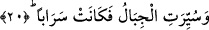

meleklerinin gelmesini mi beklerler?” (el-Bakara, 2/210) âyet-i kerîmesinde
zikredilen “gamâm”ın aynısıdır. Yâni “onlar Allah’ın ve meleklerin bulutlar arasından
emrinin ve azabının gelmesini mi beklerler?”
Bâzı âlimler âyetteki “feth”den maksad, göğün yerinden alınarak açılması demektir,
derler. Nitekim bu anlamı “Gökyüzü sıyrılıp alındığında” (et-Tekvir, 81/11) âyetinde
de görmekteyiz. Gökyüzünde belirecek yollar ve gidiş yerleri de bu âyette ifâde edilen
“kapılar”dandır. Dolayısıyla bu âyette şöyle denmiş olmaktadır: “Gök yerinden sıyrılıp
alınır ve onun yerine kendisini hiçbir şeyin tıkamadığı yollara dönüşür.”
20. Dağlar yürütülür, serap haline gelir.
“Dağlar yürütülür.” Aslında dağları yürüten Allah’tır. Nitekim “Dağları yerinden
götürürüz ve yeryüzünün çırılçıplak olduğunu görürsün” (el-Kehf, 18/47) âyeti bu
gerçeği haber vermektedir. Buna göre âyetimize şöyle mânâ vermek mümkündür:
“Dağlar yerlerinden söküldükten sonra Allah’ın yürütmesi ve emriyle havada
yürütülür.” Dağların havada yürütülmesi, sura ikinci kez üfürülmesinin ardından bütün
yaratıkların diriltilmeleri esnasında olur. Tâ ki onlar, bu manzarayı müşâhede etsinler.
Daha sonra Allah Teâlâ onları havada ayırır. İşte âyetteki “serap haline gelir” ifâdesiyle
anlatılan gerçek de budur.
Âyette geçen “serab”, insanın gün ortasında sanki suymuş gibi gördüğü şeydir.
Râğıb’ın ifâdesine göre, “serab”, çöllerde su gibi parlayan şeydir. “Dağların serab gibi
olması”, insanların gözlerinden gitmesi ve cereyan etmesi sebebiyledir. Gerçekliği
olmayan husustaki serab, gerçekliği olan husustaki içilecek su gibidir. Yâni dağlar Allah
Teâlâ’nın yürütmesi sâyesinde tıpkı serab gibi olurlar. Bir başka ifâdeyle; parçaları
darmadağın ve ana maddeleri etrafa saçılmış olduğu için hiçbir şeymiş gibi olurlar.
Nitekim dağların böyle etrafa saçılacağını: “Dağlar parçalandığı, dağılıp toz duman
haline geldiği” (el-Vâkıa, 56/5-6) âyetinde görmekteyiz. Dağların paramparça edilmesi
ve yarılması sura birinci üfürüşte olmakla birlikte, bulut gibi yürütülmesi ve
yeryüzünün dümdüz hale getirilmesi sûra ikinci kez üfürüldükten sonra olacaktır. Bâzı
âlimlere göre dağların uğrayacak olduğu birinci değişiklik, yerle bir edilme ve kırılıp
dökülmedir. Nitekim Allah şöyle buyuruyor: “Sur’a bir defa üflendiği, yeryüzü ve
dağlar kaldırılıp birbirine tek çarpışla çarpılıp darmadağın edildiği zaman işte o
gün olacak olur (kıyâmet kopar.)” (el-Hakka, 69/13-15)
Dağlardaki ikinci değişiklik, atılmış renkli yün haline gelmeleridir.
Üçüncüsü ise toz duman gibi olmalarıdır. Bu oluşum, dağların atılmış renkli yün gibi
iken darmadağın ve paramparça edilmesi ile olacaktır. Nitekim yukarıda geçtiği üzere
“Dağlar parçalandığı, dağılıp toz duman haline geldiği” (el-Vâkıa, 56/5-6) âyetinde